<Previous Exercise
| TOC
| Next Exercise>
Exercise 2: Add a test fragment with a simple JUnit test
In this exercise, we'll add a simple JUnit test in a test fragment for the bundle.
We'll run the test from within Eclipse and then execute the same test as part of the Tycho build.
Importing the refactored project
As a starting point for this exercise, we use a refactored version of the results of the first exercise:
In order to share configuration between the projects, the common configuration has been extracted to a new project tychodemo.parent.
All projects will configure the tychodemo.parent as parent, and hence inherit the common configuration.
- Select File > Switch Workspace > Other... and choose the folder Exercise_02_Add_Test_Fragment.
- Import the two projects from this folder into the workspace using File > Import > Maven > Existing Maven Projects
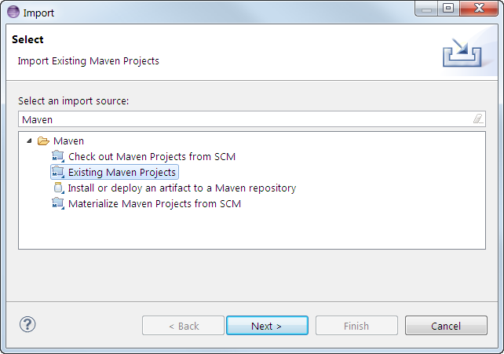
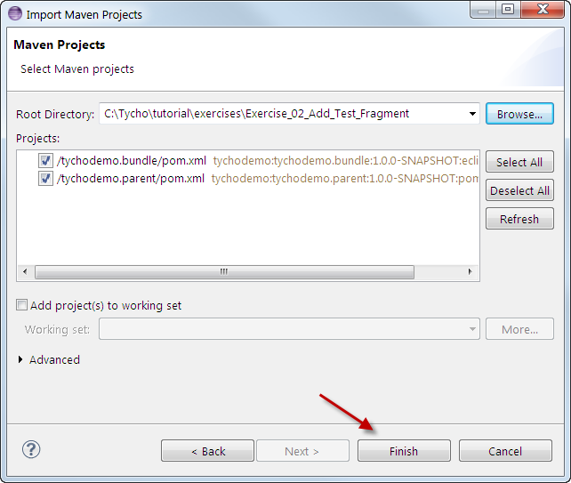
- Right-click on tychodemo.parent > Run As > Maven build, enter the goals clean install.
The build should succeed and build two modules:
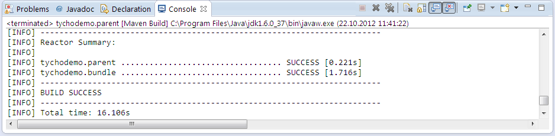
Adding a JUnit test
- Create a new fragment project tychodemo.bundle.tests with fragment host tychodemo.bundle:
- File > New > Project > Plug-in Development > Fragment Project
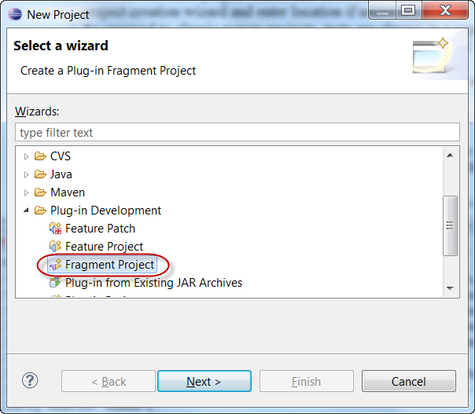
- Enter the project name tychodemo.bundle.tests

- Enter the host plug-in ID tychodemo.bundle
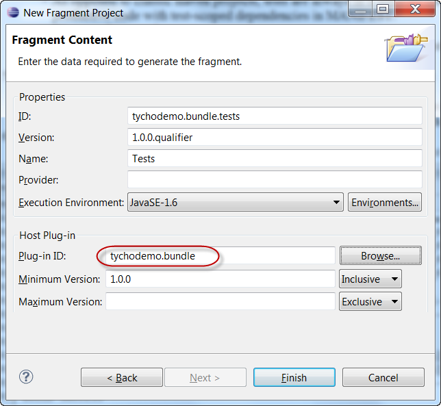
Note: As opposed to a normal Maven project, tests are in a separate project in Tycho
because otherwise we would pollute productive bundle with test-scoped dependencies in MANIFEST.
With a test fragment, the tests have still full access to the code under test:
- They can test packages which are not exported in the productive bundle
- They can even test package-private members when the test is in a package with the same name
- Refactor our code so that we can test it:
- Open AboutHandler.java, select the about text string, right-click Refactor > Extract Method
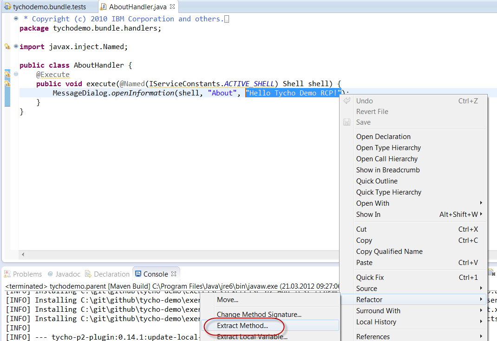
- Enter the method name getGreeting and select the default access modifier
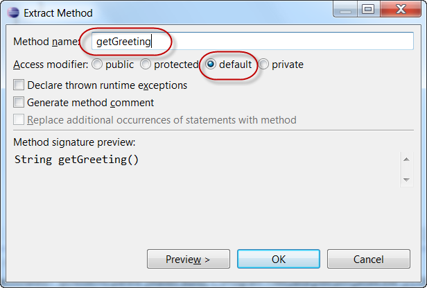
- Create a new JUnit test case tychodemo.bundle.handlers.AboutHandlerTest in the fragment project
- Make sure that the AboutHandler.java file is selected in the package explorer (to have the wizard fill in good defaults)
- File > New > Other > JUnit Test Case
- Change the source folder to tychodemo.bundle.tests/src; the other fields should already be pre-filled correctly.
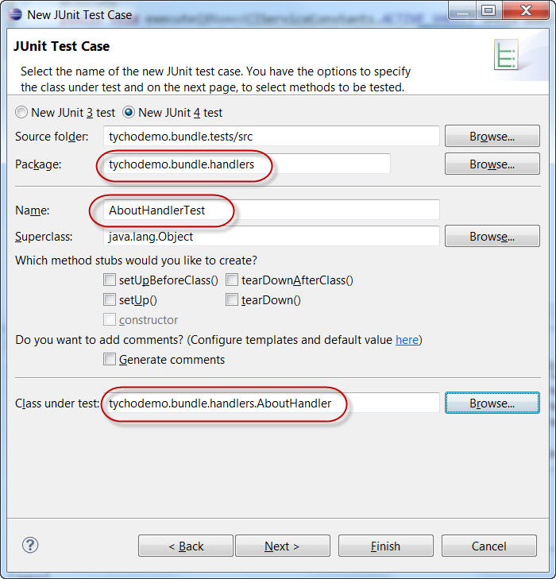
- Press Next > and choose getGreeting() to generate a test stub for it
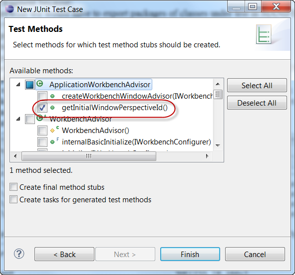
- Confirm the prompt which proposes to "Add org.junit to required bundles"
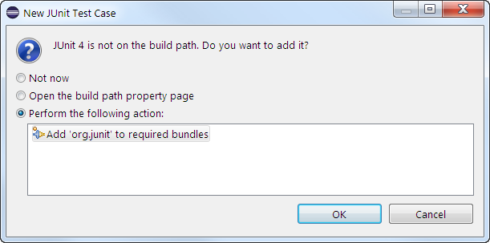
- Run the test:
- Right-click, Run As > JUnit Plugin Test
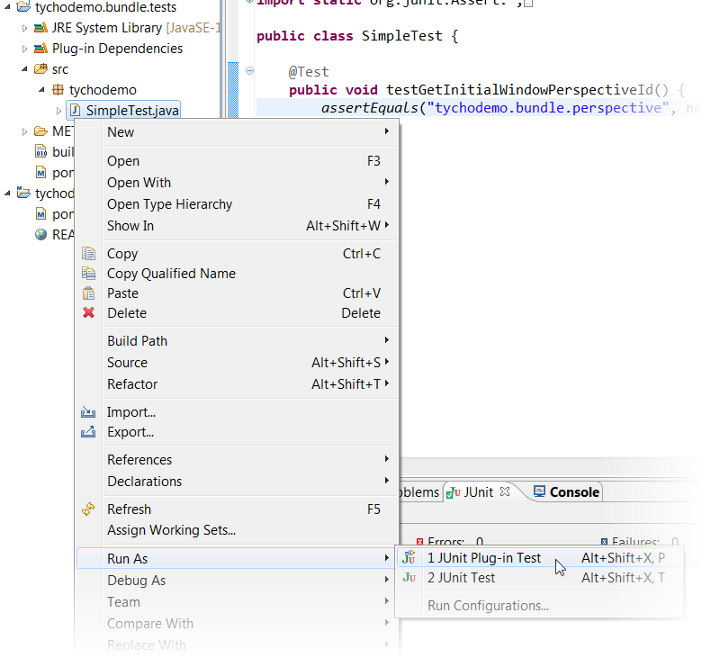
- Expected result: The test fails with java.lang.AssertionError: Not yet implemented
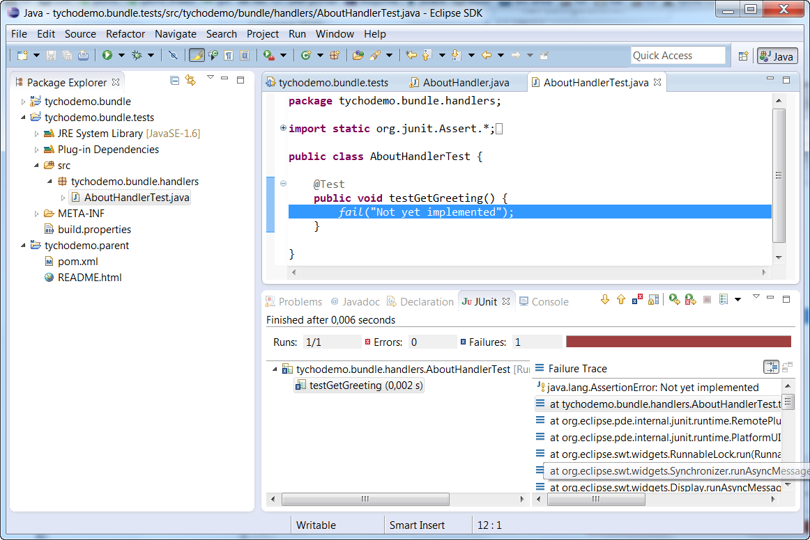
Running the JUnit test in the build
Tycho automatically executes JUnit tests in projects with packaging type eclipse-test-plugin.
So we only need to add the test project to the build.
- Convert the test project to a Maven project:
- Right-click tychodemo.bundle.tests > Configure > Convert to Maven Project
- Enter the groupId tychodemo, the version 1.0.0-SNAPSHOT and the packaging eclipse-test-plugin
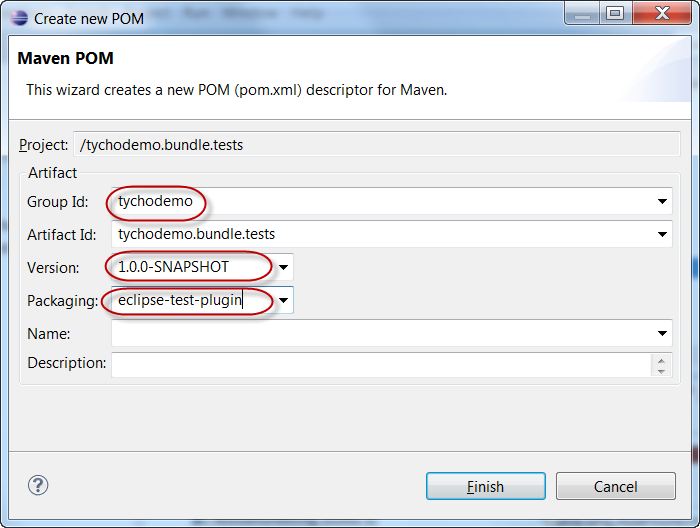
Again, we get the error Unknown packaging: eclipse-test-plugin because Tycho is not yet known to the new project.
- Add the test project as a module to the reactor, and configure the test project's parent POM
- Open the pom.xml of tychodemo.parent and click on Add... in the Modules section
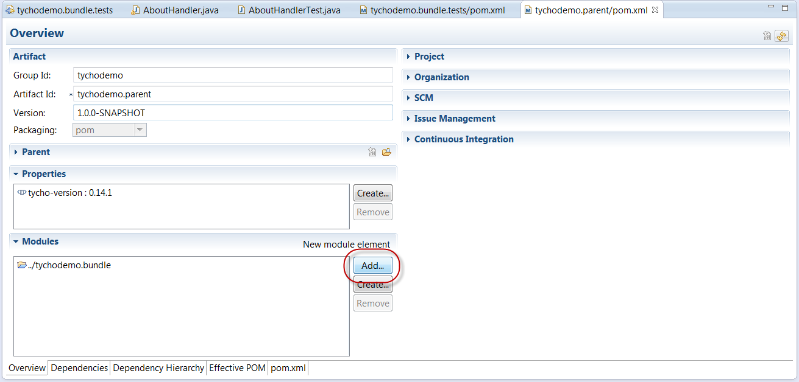
- Select tychodemo.bundle.tests and Update POM parent section in selected projects
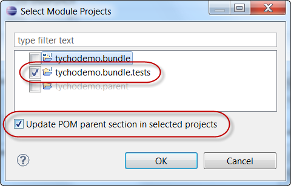
Expected results:
- You may get an error "Project configuration is not up to date".
If this is the case, right-click on tychodemo.bundle.tests > Maven > Update Project..., select the project and click OK
- The tychodemo.bundle.tests project is now listed as module in the parent POM.
(This means that it will be included in the build reactor when triggering a build on the parent POM.)
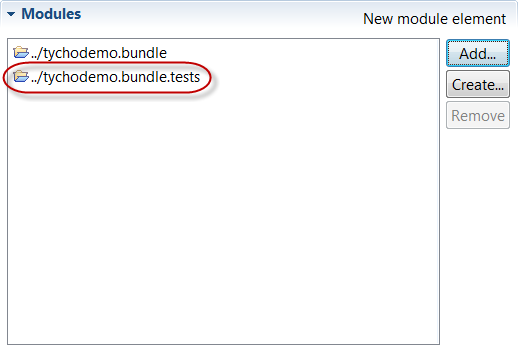
- The tychodemo.bundle.tests project has the tychodemo.parent configured as parent.
In this way, it inherits the Tycho configuration from the parent POM and the error Unknown packaging: eclipse-test-plugin is gone.
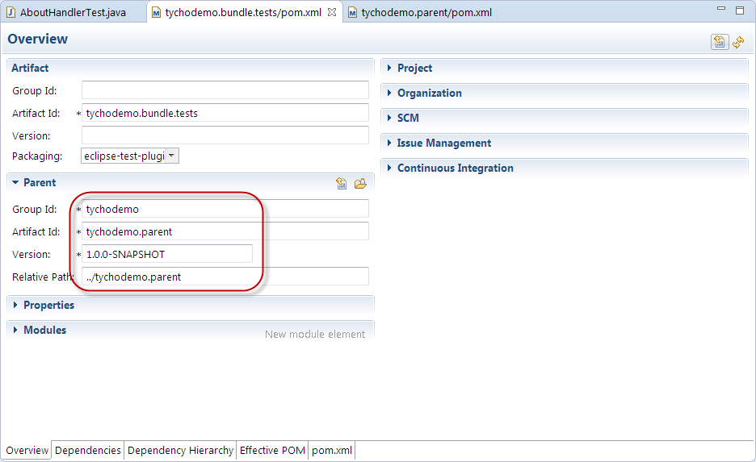
- Trigger a build on the parent POM, e.g. by right-clicking on tychodemo.parent > Run As > Maven build
Expected result: The build fails because the JUnit test test failed
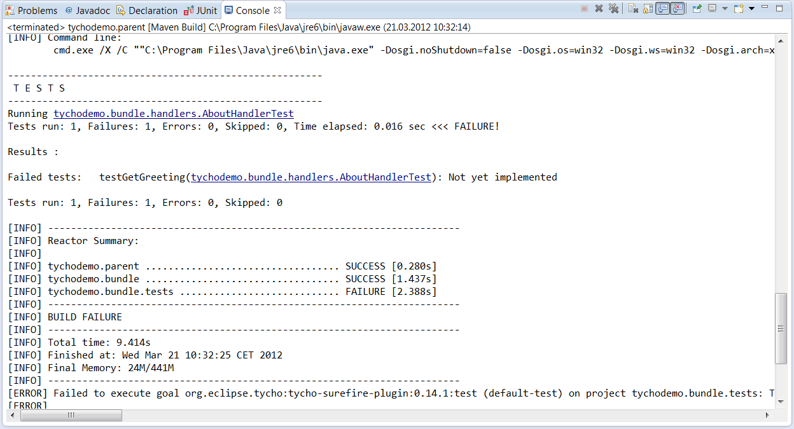
- Implement the test and run it again:
- Assert that getGreeting() contains "Tycho Demo"
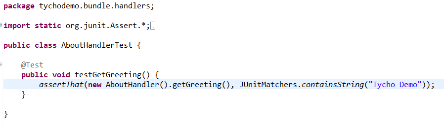
(Possible solution)
- Execute the test in Eclipse, e.g. by selecting the AboutHandlerTest launch configuration from the launch history
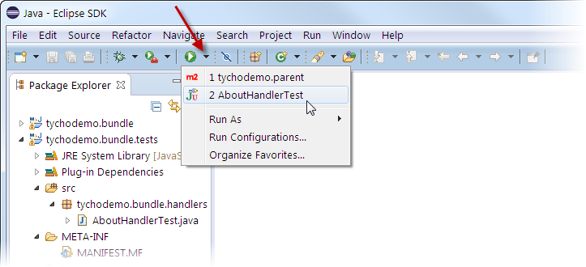
The test should now pass
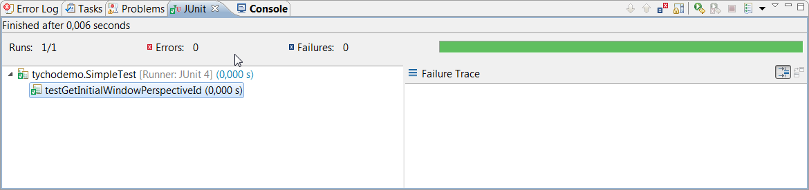
- Run the build again, e.g. by selecting the tychodemo.parent launch configuration from the launch history. The build should now succeed.
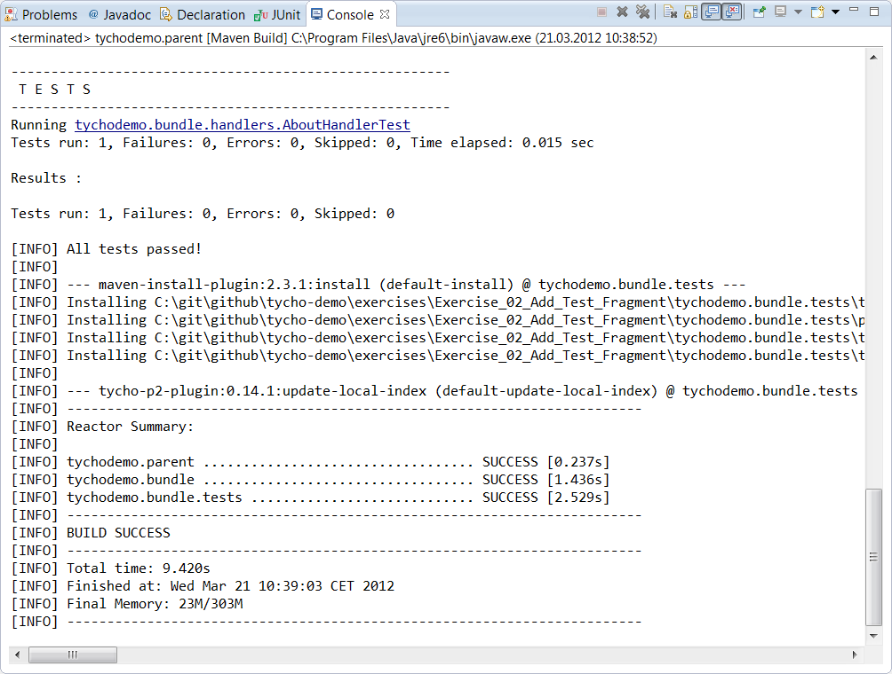
<Previous Exercise
| TOC
| Next Exercise>